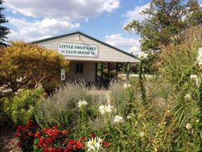
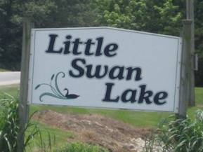
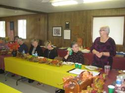
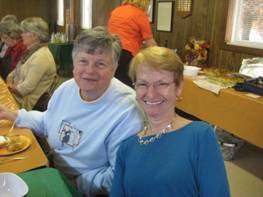
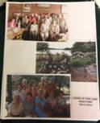
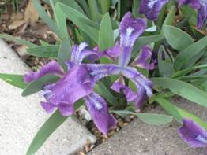

Ladies of the Lake Activities
Ladies of the Lake meets the first Wednesday of each month with a potluck lunch or outing at a restaurant. Activities of Ladies of the Lake include a Welcome Committee for new residents of Little Swan Lake, rummage sales, a Memory Garden and other landscaping improvements at the clubhouse and around the lake. The club also sells adds for the directory and put on an annual family picnic. Check out our monthly luncheon news.
Ladies of the Lake is nonprofit social club made up of women living within the Little Swan Lake community. Please join us.
We are waiting to meet you.
The main purposes of the club are:
- ■ getting to know each other
- ■ supporting Little Swan board members
- ■ improving the lake community
- ■ maintaining the Little Swan Lake Memorial Garden
 |
 |
Special Activities
 Fall luncheon |
 and fun |
Ladies of the Lake Luncheon
- ■ 1st Wednesday of each month - 12:00 noon at the LSL Clubhouse. Check out Monthly Luncheon News
- ■ Membership Dues: $1.00 dues and a dish to pass
- ■ First timers come free and do not have to bring a dish
- ■ Most meetings are potlucks at the LSL Clubhouse, but occasionally we visit
■ a special place of interest in the area for a meal, a fun educational
■ experience or touring, and some shopping. - ■ Members & friends welcome
- ■ Join us - call Jane Stevens: 309-465-3466
Ladies of the Lake Membership Directory - $1.00
- For more information: Jane Stevens: 309-465-3466.
 |
Ladies of the Lake Directory |
Morning Exercise Group
- ■ Monday through Friday - 8:30-9:30 a.m. in the LSL Clubhouse
- ■ Donation: $1.00 each week
- ■ A variety of exercise videos are used
- ■ All levels of exercise are accommodated
Memorial Garden Work Days (May through September only)
- 2nd and 4th Wednesday of each month – 9:00 a.m.
- Meet at the LSL Clubhouse and help maintain the garden under the guidance of
our resident Master Gardeners.
- Check out the new flower photos Sharon Butler took.
|
 |

- Memorial Garden Plaque - a memorial stone plaque may be purchased
in memory of your loved one and will be placed in the LSL Memorial Garden. - Information and pricing, call Nancy Hoppes: 465-5277 or email lslclerk@hotmail.com.
|
Welcome Committee
- Newcomers will receive a LSL coffee mug and lots of great information about businesses and places of interest in our local and surrounding areas.
- If you know of someone who is new to the lake community or if you are new to the lake, please call Carlene Adams: 465-9278.
Crafts Group (fall and winter months only)
- Mondays – 1:00 - at the LSL Clubhouse.
- Take some time to work on a special craft or project such as scrapbooking, crocheting, knitting, wood carving, sorting paperwork, etc. with others.
Ladies of the Lake Rummage Sale (every other year)
- ■ Held in the spring at the LSL Clubhouse
- ■ All items are donated
- ■ Proceeds go towards maintaining the LSL Memorial Garden